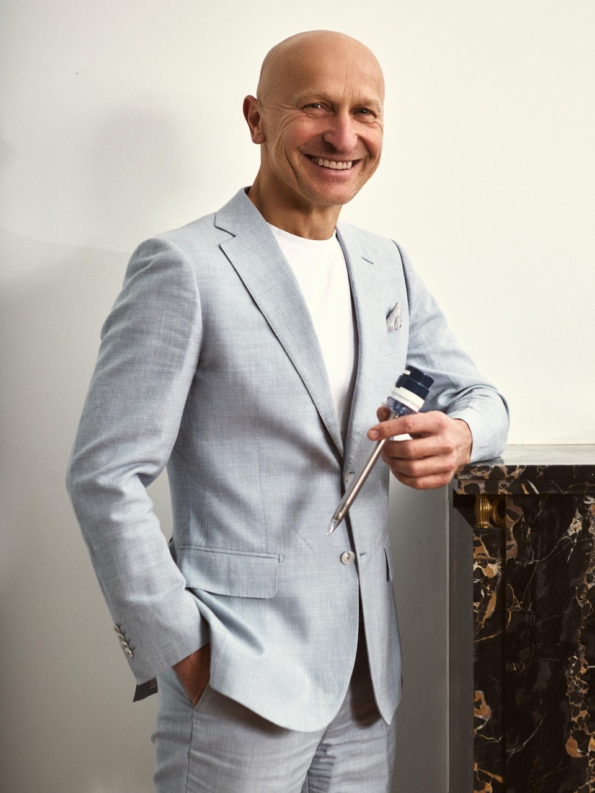
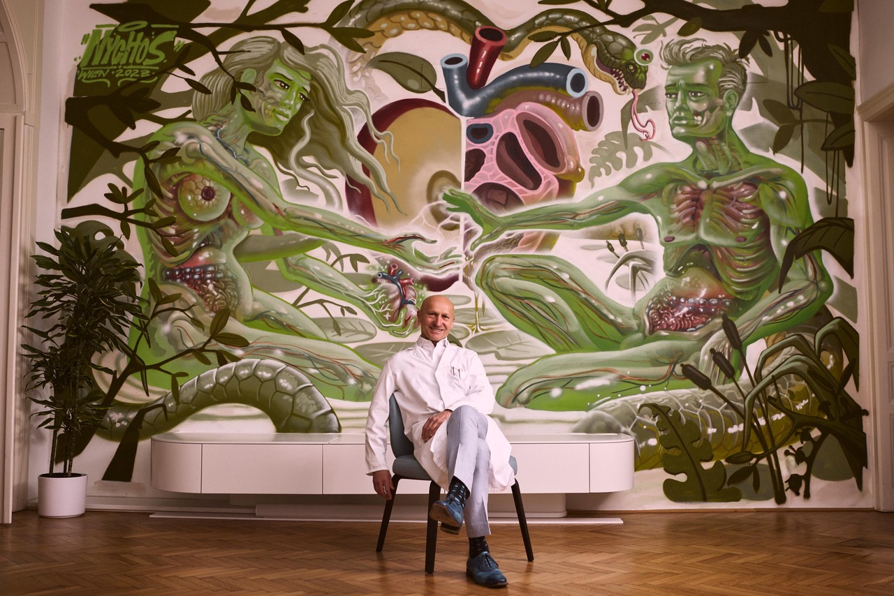

FORMER IFSO WORLD PRESIDENT · MEDUNI VIENNA · AKH VIENNA
Univ.-Prof. Dr.
Gerhard Prager
Professor for Bariatric & Endocrine Surgery
For over 25 years, I have been guiding people on their journey to a healthier life – with time, empathy, and the most advanced methods in the world.

Obesity is a chronic disease – not a matter of willpower.
The first step toward change begins with understanding that you deserve support. Medically sound. Without judgment.
SPECIALTIES
Specialized surgery at the highest level
Gastric Bypass
→Sleeve Gastrectomy
→Omega-Loop
→SADI-S
→BPD/DS
→Gastric Balloon
→Not sure which procedure is right for you? We will clarify this in your initial consultation.
The Initial Consultation
A conversation without expectations. We get to know each other, discuss your situation, and address all open questions – calmly and on equal footing.
The Preparation
All necessary examinations and findings are coordinated. I guide you through every step of the preparation.
The Surgery
Minimally invasive, precise, proven. Over 9,900 procedures form the foundation of your safety.
Life After
The surgery is just the beginning. Long-term follow-up care and support ensure your lasting success.
With a BMI of 40 or above – or 35 with comorbidities – health insurance typically covers the cost of a bariatric procedure.
The details will be clarified during the initial consultation.
THE PROFESSOR
International expertise – applied directly to your care
As the former World President of IFSO, the international society for bariatric and metabolic surgery, I helped shape the global standards that define the gold standard today. My successor in this position comes from Harvard Medical School.
“80% of type 2 diabetics no longer need medication after a bariatric procedure.”
Every patient receives my full attention. From the initial consultation through the surgery to long-term follow-up care – I am personally there for you.
International Memberships
IFSO
International Federation for the Surgery of Obesity and Metabolic Disorders
ASMBS
American Society for Metabolic and Bariatric Surgery
Austrian Society for Surgery
Austrian Society for Surgery
VIPmed
Association for Interdisciplinary Private Medicine

AKH VIENNA